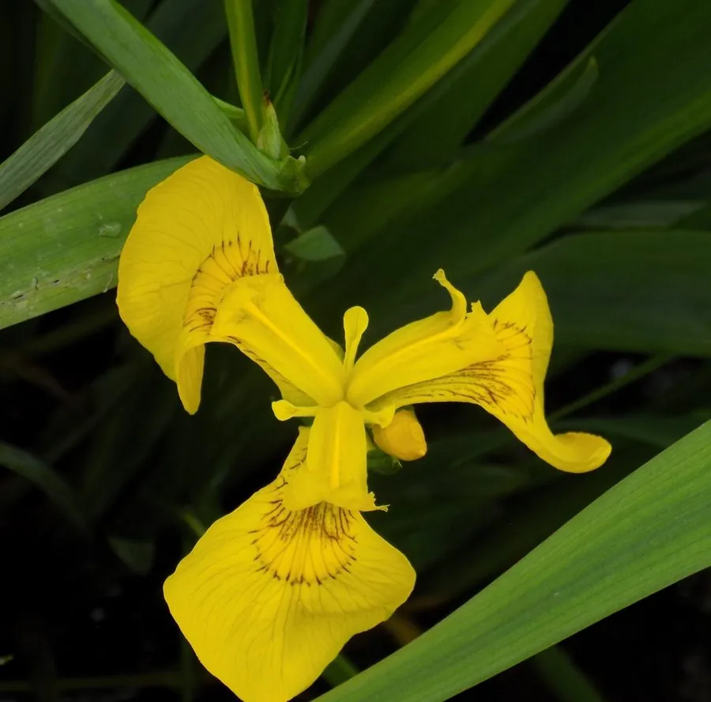

水生植物 · 植物界
黄菖蒲 Iris pseudacorus

鸢尾科多年生水生草本，鲜黄色鸢尾花挺立水边，是湿地绿化和水质净化的常用植物，原产欧洲，也是欧洲王室纹章的原型之一。
- 分类
- 门被子植物门纲木兰纲目天门冬目科鸢尾科属鸢尾属
- 栖息环境
- 河岸、池塘边、沼泽等浅水湿地，喜光、耐寒、耐污
- 地理分布
- 原产欧洲、西亚与北非，中国各地园林水景广泛栽培
- 保护级别
- 暂无评估；在北美部分地区为入侵植物
物种志
黄菖蒲为鸢尾科鸢尾属多年生水生草本，株高 0.6–1.2 米，根状茎粗壮、匍匐。叶片剑形，长 0.5–1 米，直立，灰绿色。花葶自叶丛抽出，花鲜黄色，直径 8–10 厘米，外花被片上有褐色网纹，花期 4–6 月；果实为蒴果。
黄菖蒲原产欧洲、西亚和北非，中国各地水边、湿地和园林水景广泛栽培，喜阳光充足、湿润和浅水环境，耐寒耐污。它花色鲜黄、株形挺拔，是水岸绿化的常用材料；根系能吸收水中氮磷，常用于人工湿地净化。黄菖蒲的黄色鸢尾花是欧洲王室纹章“鸢尾花”的原型之一；根状茎有毒性，不可食用，栽培时也应避免误采，家中有儿童时需提醒。
形态与习性
- 株高0.6–1.2 米，叶片剑形
- 花期4–6 月，花鲜黄色
- 果期花后结蒴果
- 光照喜充足阳光
- 水分浅水，水深 0–30 厘米
- 土壤肥沃湿润的壤土或沼泽土
- 繁殖根状茎分株繁殖
- 主要用途水岸绿化、人工湿地净化
趣味知识
- 黄菖蒲的花鲜黄色，是欧洲王室纹章“鸢尾花”的原型之一。
- 它耐寒耐污，根系能吸收水中氮磷，常用于人工湿地净化。
- 黄菖蒲的根状茎有毒性，不可食用，栽培时避免误采。
- 它原产欧亚和北非，在北美部分地区逸生后成为入侵植物。